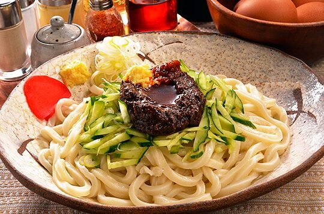

～冷麺～


岩手の美味しい食べ物
～わんこそば～
「わんこそば」は、お客様のお椀に次々に給仕する一口そばを、お好みの薬味を加えて召し上がっていただくもので、 お客様が満腹になりお椀にふたを閉めるまで続けられるものです。 基本的に無制限・食べ放題ですが、大食い・早食いを 進める食べ方ではなく、お客様のペースに合わせて、ゆっくりと食べていただく「おもてなしの郷土料理」です。
～冷麺～
盛岡冷麺は、高麗キジのだし汁に似た牛スープに酸味と辛味のあるキムチを組み合わせ、小麦粉を使って半透明の麺に仕上げた料理です。 盛岡冷麺は、岩手ならではの自然の力や素材、人々の想いによって作り出され、盛岡市民に長きにわたって愛され育くまれてきました。 その結果、焼肉店は焼肉を食べる店というよりも盛岡冷麺を食べる店として位置づけられ、また、焼肉店以外の飲食店でも提供されたり、 スーパーなどで多くの家庭用冷麺が販売されています。今では、ラーメンやそば・うどんと同じように、日常に欠かせない麺料理としてすっかり定着しています。
～じゃじゃ麺～
見た目は、きしめんのような平打ち麺の上に、肉味噌ときゅうり、長ネギがのった、中華料理の「ジャージャー麺」に似たスタイルの料理。 食べる時に、お好みで卓上のラー油やニンニクなどを加え、思いっきり、かき混ぜます。加える調味料の種類も量も自由なので、 自分好みの味を見つける楽しみがあるという点がじゃじゃ麺ならではの魅力です。